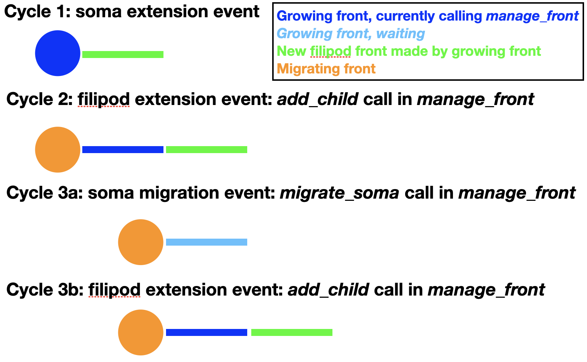

Modeling soma migration¶
migrate_soma allows somata to move through the simulation volume, simulating their migration before they arrive at their final location and grow dendritic trees. Migrating somata cannot have children except for very specific ones. Examples of all migration modes can be found in the Migration notebook.
Simple migration¶
No soma children are allowed for simple migration. A new coordinate new_pos is provided for the soma to migrate to:
def manage_front(self,constellation):
...
try:
mig_dir = # compute a direction to migrate to
new_pos = self.orig + mig_dir * mig_step
self.migrate_soma(constellation,new_pos)
return
except (CollisionError,GridCompetitionError,VolumeError):
# deal with error
...
This will move the soma to a new location:

Note that because somata are spherical, self.orig should be used in the computation of new_pos. As for front extension, migration can only occur if the prospective location is free and within the simulation volume. If this is not the case, repectively CollisionError or VolumeError will be triggered.
Similarly, migrate_soma can trigger a GridCompetitionError. To make this much less likely, it is important to make sure that self.is_migrating() == True. In most cases the migrating flag will already be set when the soma is created:
admin.add_neurons(MigrationFront,"neuron",1,[[10,50,20],[10,50,20]],5.,migrating=True)
If migration should be activated only later in the simulation, the proper Front status flags should be set in the cycle with, for example, set_migrating() before the first call to migrate_soma.
In addition, migrate_soma can trigger specific BadChildError or ActiveChildError if inappropriate children are present or NotSomaError if self is not a soma.
Filipodium migration¶
In reality, cell bodies rarely migrate by themselves. Instead they usually extend processes that can sample the environment and follow one of these to migrate along. This sequence can be mimicked using the filipodium migration option:
{kind=link}
As one can see in the figure, the soma first extends a filipod front as its only child and that front extends another filipod front. Now the soma can migrate to the location of its filipod child, which is removed. Note that the order of cycles 3a and 3b is actually random, so at the time of soma migration the filipod extension may already have occurred. Cycles similar to 3a and b can now be repeated endlessly until the soma arrives at its location. The corresponding code for migration is:
def manage_front(self,constellation):
...
try:
self.migrate_soma(constellation,None,filipod=True)
return
except (CollisionError,GridCompetitionError,VolumeError):
# deal with error
...
For this to work properly the soma can have only a single child with swc_type 12 (filipodium). Note that no new_pos is given because instead the coordinates of the filipod child will be used to move the soma to a location where it touches the filipod end coordinate. The filipod child is removed and will have its is_retracted() flag set and its death value in the database will be updated to the current cycle. To have continuous migration, additional filipod children must have already been grown, as in the figure above. The filipod that originally was the grandchild of the soma, will become its child after the migration event. An example of full code simulating all these events can be found in the Migration notebook. If no filipod grandchild exists, the soma will have to grow a new filipodium before migrate_soma can be called again with the filipod=True option.
Note that a longer filipod with more fronts can be grown than in the example. The filipod can also, transiently, contain branch points but one of the branches needs to be retracted before the soma reaches the branch point as only a single filipod soma child is allowed. Filipodium migration can be combined with trailing axon migration, in which case the soma will have two children.
Filipod growth for a migrating soma uses soma.radius instead of filipod.radius for collision detection in add_child to make sure that there is enough space for future migration.
Trailing axon migration¶
Some somata leave an axon behind when they migrate. This can also be simulated by using the trailing axon migration option:

To enable this mode the soma must have extended a first axon front (swc_type 2) as its only child. Once an axon child is present, additional trailing axon fronts can be made during migration:
def manage_front(self,constellation):
...
try:
mig_dir = # compute a direction to migrate to
new_pos = self.orig + mig_dir * mig_step
self.migrate_soma(constellation,new_pos,trailing_axon=True)
return
except (CollisionError,GridCompetitionError,VolumeError):
# deal with error
...
This will insert a new trailing axon front (swc_type 2) between the original axon front and the soma. This new trailing axon front will become a child of the soma and the original axon front becomes its grandchild. These paternity changes are entered into the database. An example of full code simulating all these events can be found in the Migration notebook. In the example above the first axon front is made inactive, but nothing prevents it from growing also further, extending the axon away from the migrating soma.
Trailing axon migration can be combined with Filipodium migration, in which case the soma will have two children.